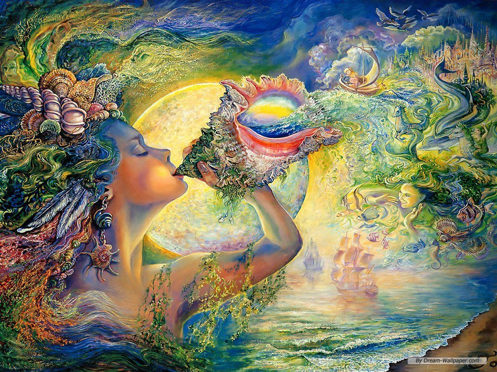
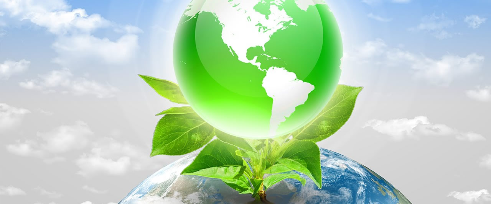
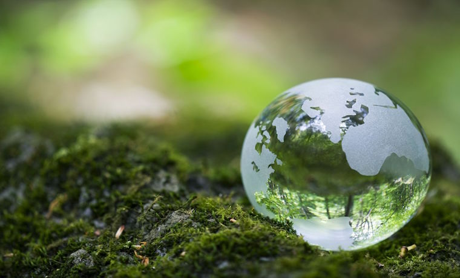
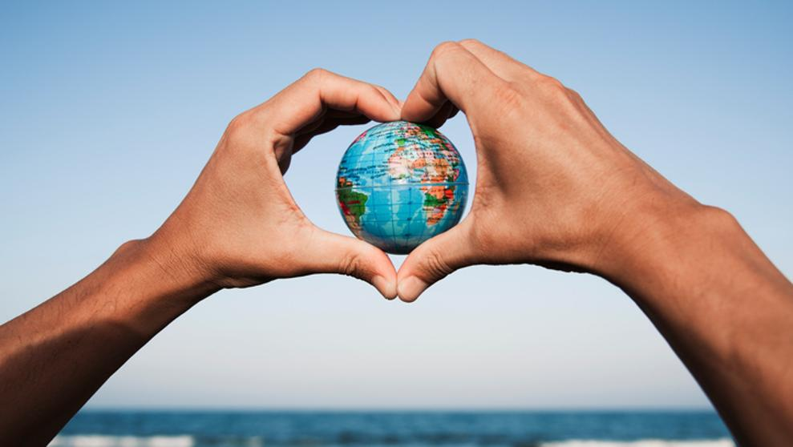
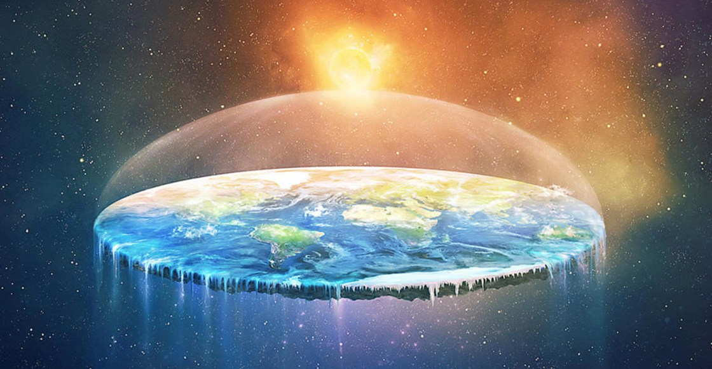

Día Internacional de la madre Tierra 22 de abril.
- 

- 
- 
- 
- 
Realizado por:
Ángel Arturo Márquez Soberanes
4"E"
Especialidad
Programación
Submódulo
Desarrolla Aplicaciones moviles
Docente
Lic. Jose Antonio Gómez Hernandez
4"E"
Programación
Desarrolla Aplicaciones moviles
Lic. Jose Antonio Gómez Hernandez
Celebramos el Día internacional de la Madre Tierra para recordar que el palneta y sus ecosistemas nos dan la vida y el sustento. Con este día, asumimos, ademas, la responsabilidad colectiva, como nos recordaba la Delaración de Río de 1992, de fomentar esta armonía co la naturaleza y la madre Tierra. Este día nos brinda la oprtunidad de concienciar a todos todos los habitantes del planeta acerca de los problemas que afectan a la Tierra y a las diferentes formas de vida que en el se desarrollan.
El origen de este día, celebrado mundialmente (aunque no en todas partes), se encuentra en Estados Unidos, durante los 70. Y está asociado, sin duda, a un nombre: Gaylord Nelson. La historia cuenta (a pesar de los curiosos rumores sobre Lenin) que fue este político quién aprovechó un miércoles para organizar una manifestación en defensa del medio ambiente y el ecologismo. Un momento muy estudiado y que venía cociéndose desde la década de los 60 debido a la creciente irresponsabilidad ambiental del gobierno de Estados Unidos. Ya habían gérmenes plantados desde la comunidad científica y estudiantil. Ese miércoles los estudiantes y trabajadores se unieron en una manifestación pacífica que pretendía rendir homenaje y mostrar la preocupación colectiva sobre temas como el medio ambiente, la superpoblación o la conservación de la biodiversidad.
«Madre Tierra» es una expresión común utilizada para referirse al Planeta Tierra en diversos países y regiones, lo que demuestra la interdependencia existente entre los seres humanos, las demás especies vivas y el planeta que todos habitamos.
La Tierra y sus ecosistemas son nuestro hogar. Para alcanzar un justo equilibrio entre las necesidades económicas, sociales y ambientales de las generaciones presentes y futuras, es necesario promover la armonía con la naturaleza y el planeta.
El Diálogo se realizó con el objetivo de inspirar a los ciudadanos y las sociedades a reconsiderar la relación que mantienen con la naturaleza, acorde a la meta 12.8 de los Objetivos de Desarrollo Sostenible con respecto a los patrones de consumo y producción sostenibles.
Mejorar la base ética de la relación entre la especie humana y la Tierra en el contexto del desarrollo sostenible no es solo beneficioso, sino también necesario.
La tierra y los suelos constituyen la base para el desarrollo sostenible de la agricultura, las funciones esenciales de los ecosistemas, y la seguridad alimentaria, y por lo tanto son la clave para sostener la vida en la Tierra.
El suelo es un recurso natural no renovable, su pérdida no es recuperable en el marco de tiempo de una vida humana.
La degradación del suelo es una amenaza real y creciente causada por usos insostenibles de la tierra y prácticas de gestión y extremos climáticos resultantes de diversos factores sociales, económicos y de gobernanza.
La tasa actual de degradación del suelo amenaza la capacidad de las generaciones futuras para satisfacer sus necesidades, a menos que podamos invertir esta tendencia a través de un esfuerzo concertado para su gestión sostenible.
Al poner los suelos en peligro, se compromete la agricultura sostenible, la seguridad alimentaria y el suministro de servicios ecosistémicos.